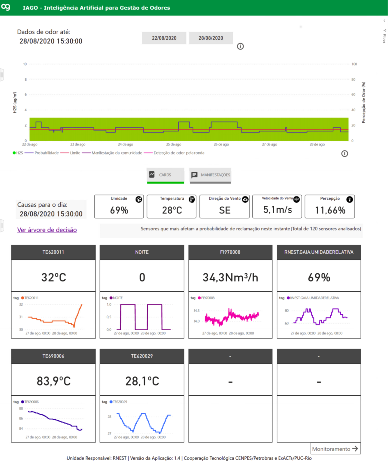

Hello, my name is André Luiz, I am Computer Scientist and I have experience as Software
Engineer, and Data Scientist in multiple industries: Edtech, Public Prosecution and Court of
Law, Oil & Gas Distribution, and Agribusiness.
Activities:
Working on models for Visual Learning Analytics to support instructors in the analysis of student logs from Virtual Learning Environment in order to support them in the decision making.
Activities:
Working on the Cacuriá development project, an authoring tool for multimedia Learning Objects (LOs) to allow teachers to create multimedia educational content for interactive TV and the Web without requiring programming skills. Cacuriá is integrated with the iVoD (Interactive Video on Demand) service from RNP, a National Research and Educational Network responsible for promoting the development of networks in Brazil, including the development of innovative applications and services.
Digital Inspector: Artificial Intelligence for Equipment Inspection
Developed under my technical leadership in collaboration with Petrobras when I was a data scientist at ExACTa PUC-Rio. The problem was related to the integrity of equipment in an oil and gas refinery, which is ensured by a set of standardized management processes. One of these processes is equipment inspection, where equipment analyses are conducted by inspection experts and documented in technical reports. Just like any other written text, these reports can occasionally contain inaccuracies or gaps in critical information related to the management process. Such inaccuracies in reports must be promptly identified and corrected to ensure an effective inspection process, accurate information, and compliance with maintenance deadlines.
Our proposal, therefore, was to build an artificial intelligence model to assist inspectors in report writing. To accomplish this, we started by constructing a database through the collection of reports produced by all Petrobras refineries throughout the last few years. In essence, these reports consist of determining whether the equipment is in proper working condition. If not, it was necessary to describe the damage, its cause, the mechanism of damage, and the maintenance action required. We had the assistance of a group of selected inspectors as consultants to clarify potential doubts and validate our proposal.
After constructing our database, we performed meticulous text extraction, data structuring, cleaning, and standardization. We made several discoveries after extensive data exploration and the application of statistical methods. One of these discoveries was that the terms used in the reports were quite limited. Due to this, we were able to classify all possible damages, causes, mechanisms, and actions present in the reports. Furthermore, we identified a strong correlation between them. We also found a correlation between the location of the refinery and the damages and causes, which made perfect sense since rust damage, for example, was more frequent in refineries located near the sea.
Next, we built a decision tree model that, based on the damage and cause, suggests the mechanism and action to be taken. This machine learning model was chosen for its interpretability. Based on our tests, the harmonic mean of accuracy and precision (F1 score) reached a result greater than 95%. At the request of the Petrobras team, we also conducted a test with Azure's AutoML service, which yielded a positive result very close to our model's performance. Consequently, we decided to keep the AutoML model to facilitate the solution's maintenance by the Petrobras team.
Subsequently, we deployed our model as a service called the "Digital Inspector," designed to detect inaccuracies or gaps in the wording of reports, providing real-time alerts to inspectors and suggesting the most appropriate terms for damages, causes, mechanisms, and actions in the report. This service was made available through a RESTful API that allowed integration with the equipment inspection management system used by Petrobras inspectors. Additionally, the digital inspector can improve its learning as more reports are added to our database, validated by inspectors, and made available for continuous model retraining.
This project received the Petrobras Inventor Award 2022 in recognition of the results achieved and the impact on the efficiency of equipment maintenance in refineries across Brazil. Undoubtedly, the project was challenging but provided ample opportunities to learn. I am so proud of the achieved results.
As a data scientist at ExACTa PUC-Rio, I executed a project focused on diagnosing and
forecasting high levels of hydrogen sulfide (H2S), a poisonous, toxic, and hazardous gas
commonly emitted in oil refineries. The main idea was to provide this crucial information
through a dashboard to support end-users in their decision-making.
The project began with a thorough exploration and analysis of refinery historical data using
statistical methods and visualization techniques. Through these analyses, we uncovered significant
correlations and insights, particularly in conjunction with meteorological data, including wind
direction and speed, humidity, and temperature.
Then, we developed a decision tree model to provide prescriptive information regarding H2S emissions.
This machine learning model was deliberately chosen for its interpretability, allowing us to elucidate its
learning process and gain insights into its decision-making mechanisms. Our model was designed to generate H2S
level predictions based on a threshold defined by the end-users.
Finally, to visualize and present our findings effectively, we selected Power BI as our platform
for dashboard development. The central visualization component featured a bar and line chart, illustrating
the predicted H2S emission rates. Additionally, we included a "Cards" tab within the dashboard to display
meteorological data and potential factors contributing to H2S measurements at a given time.

EDUVIS
An online tool to assemble dashboards based on
instructors’ preferences
This project was my Ph.D. research, which we shed light on how to support
instructors in analyzing student logs from Virtual Learning Environments.
Our main goal in this project is enable Virtual Learning Environments to assist
instructors in gaining insights about both students’ behavior and performance.
Firstly, we conducted interviews with instructors who work in Brazil and a
systematic mapping of the state-of-art about Education Data Mining and Learning
Analytics.
This study aimed to identify which kinds of information about students the
instructors regard as meaningful (e.g., performance, behavior, engagement); how
these kinds of information are gathered; and how they drive requirements for
improving their analyses.
Then, we analyzed logs from online courses offered in Brazil and compared our
findings with results presented in the literature.
We explored and analyzed these logs using statistical methods and machine learning
techniques.
Furthermore, we have not found in the literature works about instructors’
visualization preferences of student logs.
Therefore, we conducted a study to identify how much the instructors take into
account topics related to both students’ behavior and performance, as well as their
visualization preferences.
We also noted a lack of work showing models to support the development of learning
analytics tools.
In order to bridge this gap, we presented a model connecting both Visual Analytics
theories and models as well as instructors’ requirements, their visualization
preferences, literature guidelines and methods for analyzing student logs.
We developed EDUVIS as an open source online tool to assemble dashboards based on
our proposed model.
This tool was built using Python and Javascript.
In particular, all the visualizations (total of 141) were designed using Plotly,
which provides interactivity, such as zoom in, zoom out, pan, select, toggle spike
lines, and mouse hover.
We captured evidence of their acceptance of our proposal and obtained instructors’
feedback about the tool such as their both analysis and visualization preferences.
The combination of the answers to the research questions yields a framework to
enable Virtual Learning Environments to assist instructors in gaining insights about
both students’ behavior and performance.
We hope that our proposed model might be a guide to the development of new
dashboards and ground future research.
During my time as a data scientist at ECOA PUC-Rio, I initiated a project with the
objective of assisting prosecutors in locating legal texts with similar contextual content.
This project involved in-depth analysis and exploration of data obtained from both the
Public Prosecution and
Court of Law from Rio de Janeiro.
The documents, mainly in PDF format, underwent a text extraction process, followed by a meticulous
pattern identification and analysis. To construct a vector representation of these documents,
we explored various methodologies and ultimately opted for a pre-trained model using word embeddings specifically
designed for Portuguese text, developed by USP (Universidade de São Paulo).
To evaluate text similarity, we employed cosine distance calculations among the vectors and arranged
the results accordingly. To enhance accessibility, we transformed this functionality into a RESTful API service,
streamlining the process for our end-users. The outcome was a collection of legal texts sorted in ascending order
of cosine distance, making it easier to identify and access documents with similar contextual content.
Distribution of Court Proceedings
A recommendation system to assign prosecutors in court
proceedings
As a Data Scientist at ECOA PUC-Rio in 2018, I had the privilege of leading a significant
project aimed at enhancing the operational efficiency of the Public Prosecution from Rio de Janeiro.
The objective of this project was to optimize the allocation of prosecutors to individual legal cases,
ensuring that each case was assigned to the most suitable prosecutor. To achieve this, we embarked on a
comprehensive data-driven initiative.
This project began by acquiring extensive historical lawsuit data, with a diverse array of metadata such
as case type, cause, and origin. This dataset tracked the legal journey of lawsuits from the Court of Law from Rio de Janeiro to the Public Prosecution.
To prepare this data for analysis, we meticulously executed a data cleansing process, which proved to be a
labor-intensive yet indispensable phase of the project.
Through statistical methods, we unearthed critical correlations within the dataset. These correlations were
instrumental in the development of a robust decision tree model to automate the task of matching the most
appropriate prosecutor to each lawsuit. This machine learning model was deliberately chosen for its
interpretability, allowing us to elucidate its learning process and gain insights into its decision-making
mechanisms.
We operationalized our model by deploying it as a RESTful API service. By doing so, we enabled seamless
integration into the existing workflow of the Public Prosecution, allowing them to input relevant case
features and receive instant recommendations for the most suitable prosecutor. This project not only
streamlined the allocation process but also improved the efficiency of the Public Prosecution from
Rio de Janeiro.
Ginga NCL
A middleware of the Japanese-Brazilian Digital TV
System
Ginga® is the middleware of the Japanese-Brazilian Digital TV System (ISDB-TB) and
ITU-T Recommendation for IPTV services.
Ginga-NCL Presentation Environment is the required logical subsystem of Ginga,
responsible for running NCL applications.
NCL is an XML application language that provides support for specifying
spatio-temporal synchronization among media objects, media content and presentation
alternatives, exhibition on multiple devices, and live producing of interactive
non-linear programs.
In this project, I worked mainly with rebuilding a video player that was used by Ginga.
It was quite a challenge, but I managed to develop a new video player using C++, GStreamer
for audio and video decoding, and Cairo for 2D rendering. I also enabled some audio and
video properties that were described on NCL, which included balanceLevel, trebleLevel,
bassLevel, and freeze. It was great to see the final result, and the figure below shows
Ginga playing an application using the new video player.
Cacuriá is an authoring tool designed to create educational content (aka learning
objects) for the Web and Interactive Digital TV environments.
This project was my M.Sc. research, focused on enabling education professionals to
create learning objects through an intuitive process, which is designed and crafted
by the teacher.
This process is based on educational videos, which will be enriched by the
professional directly (without the need of a programmer or designer) and also by
adding multimedia content (image, audio, text etc).
As the main developer of Cacuriá, I used C++ and the Qt framework to create a tool
that can be used on different operating systems, including Ubuntu, MAC OS, and Windows.
Figure below presents the current Cacuria's interface used to create and manipulate
the content.
One of the most exciting features of Cacuriá is its integration with the iVoD
service from RNP,
a National Research and Educational Network responsible for promoting the
development of networks in Brazil. RNP is committed to providing innovative
applications and services that enhance the learning experience. Cacuriá is a perfect
example of this commitment, and I am proud to have been a part of its development.